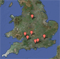
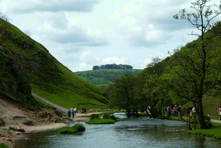
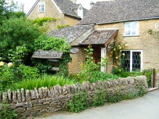
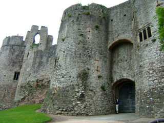
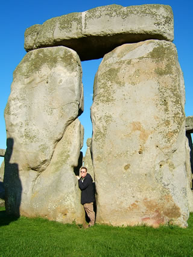
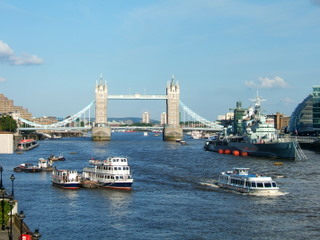

England Trip 2007
In May and June 2007, Cary and I spent 15 days traveling around England (plus a very brief detour into Wales). It was our first trip to Europe. We had very briefly been out of the USA the year before, when we jaunted up into Montreal for a few hours during our Vermont vacation, but this was our first significant out-of-country trip. We had a fabulous time!
The trip was heavily focused around Jane Austen sites, both those from her life as well as a few from the 1995 mini-series Pride & Prejudice. You see, I am an unapologetic Janeite, and I have a very understanding and loving husband.
Itinerary
The trip began on May 19, 2007, when we flew into the Manchester airport. We flew back home from London on June 3. We rented a car for the entire non-London portion of our trip, so we were able to explore around quite a bit. You can download the documents listed below to get an overview of where we went and what we did each day.
Download:
Derbyshire
We visited Derbyshire on the first three days of our trip. We stayed at a B&B called Bassett Wood Farm in the little village of Tissington, where the annual well dressing happened to be occuring at the same time. The landscape of Derbyshire was gorgeous; I can see why Elizabeth Bennet was so impressed. My highlights were visiting the two houses used for Pemberley in the Pride & Prejudice mini-series. I even got to see the little pond where Colin Firth's famous wet shirt scene occurs.
Download:
- Cary riding a horse for the first time (MOV)
- Zoe at Lyme Park
- Cary and Zoe in Dovedale Valley
- Zoe at Sudbury Hall
{kind=link}
{kind=link}
{kind=link}
Cotswolds
The next seven days were spent traveling all around the Cotswolds and the surrounding area. We stayed at a cottage in the famously picturesque village of Bibury. We explored more than a dozen other Cotswolds villages.
One of our favorite towns in the Cotswolds was Cirencester, because of the great food we had there and the Corinium Museum. The collection of Roman (and earlier) artifacts at the museum was much larger than we expected and quite fascinating.
The more ancient something is, the better Cary loves it, especially if it's all in ruins. So, Cary's highlights in the Cotswolds were not just the Roman museum but also the unearthed Chedworth Roman Villa and the ruins of Minster Lovell Hall. One of our favorite memories from the area was our wet, cold trek to the Belas Knap burial mound, built around 2500 BC. Drying out and warming up in the pub afterwards was lovely, and the whole thing was just so English.
Download:
{kind=link}
{kind=link}
{kind=link}
Day-trips from the Cotswolds
While staying in Bibury, we took a couple trips out of the Cotswolds proper.
One day-trip was to Bath to see the Jane Austen sites and, of course, the Roman Baths (which are also Jane Austen related, incidentally). On the way back from Bath, we stopped at the village of Lacock, which was used for Meryton in the Pride & Prejudice mini-series (along with a bunch of other movies).
Another day-trip took us into Wales to see the ruins of Chepstow Castle. This was one of Cary's highlights during the trip. It was very large and quite impressive. On the way to Wales, we successfully hunted down the private home used for Longbourne House in Pride & Prejudice.
Download:
{kind=link}
{kind=link}
{kind=link}
Winchester and Surrounding Area
We finally had to say goodbye to our cute cottage in Bibury and moved on to Winchester, where we spent two days. On the way, we saw the annual Gloucestershire cheese-rolling, which was one of our highlights of not only this trip, but all the trips I've ever taken. So bizarrely fun.
Winchester was a cool town that I'd love to spend more time in. The Cathedral was beautiful, and it was so interesting to see its mixture of architectural styles that happened as it was built up over the centuries. I visited Jane Austen's grave in the Cathedral, of course, and cried outside the house where she died. Yes, I love Jane Austen that much.
While staying in Winchester, we took a short jaunt down to the New Forest to see the wild ponies. I am still a 12-year-old girl when it comes to horses, and standing in a field among wild ponies, a good portion of which were adorable little foals, made me giddy. That same day, Cary was giddy with excitement at getting to not only see Stonehenge but walk among it and touch the stones. You have to pay extra for this and reserve it way in advance, but it's so worth it. Everyone was so excited to be there, that even if you didn't care much about Stonehenge (like me), it was impossible to not get caught up in the excited happiness.
We visisted Chawton Cottage, where Jane Austen lived for many years and wrote most of her novels, on our way out of Winchester and up to London. It was amazing to touch the table she wrote on (which was against the rules, but I promise I didn't hurt it). We also stopped by the village where she was born and grew up; we visited the little church where she was baptized and her father was rector for many years.
Download:
{kind=link}
{kind=link}
London
We spent our last three days in London in a cool apartment in Lambeth. We saw some of the main attractions, but there's no way to squeeze them all in in three days—at least not enjoyably. We had a great time at the Tower of London. The British Museum was amazing, but we didn't have nearly enough time there. Cary particularly enjoyed the Cabinet War Rooms and Museum. We saw Les Miserables as well as Othello at the Globe, and we ate great food.
The Jane Austen fun wasn't done yet though! We saw her writing desk and some of her writings at the British Library, and in the Naitonal Portrait Gallery we saw the only known portrait of her.
Our last full day in England, June 2, was our wedding anniversary. We had a lovely dinner at a Turkish restaurant called Ev, sitting out on their lovely plant-decked patio on a mild summer evening.
{kind=link}
{kind=link}